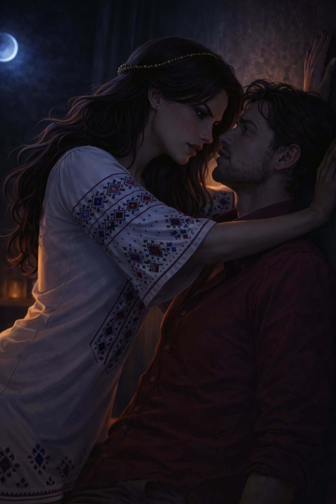

Поглавље 16: Легенда и страст
Página individual del capítulo con lectura y ejercicios.

Луис и Наташа седе у стану, разговарајући о следећим корацима. Ситуација је компликована, а они знају да су две рускиње у потрази за камењем.
"Шта мислиш, да ли су те жене имале приступ рукопису?" пита Луис.
Наташа слегне раменима. "Могуће. Али ми имамо предност – знамо где су камења."
Одједном, Наташа устаје и узима књигу са полице. То је стара књига на руском језику. Она је показује Луису. "Знаш ли читати руски?" пита га.
Луис кима. "Да, знам. Зашто питаш?"
"Ово je књига о легендама," каже Наташа. "Можда имамо користи од ње."
Луис отвара књигу и почиње да чита. Наташа седи поред њега, слушајући пажљиво. Луис чита:
"У једној старој легенди, Стаљин и Тито су се суочили са митолошким чудовиштем из српске митологије – Змај Огњени Вук. Ово чудовиште је једино које може зауставити Час дивљака. Али, да би се то догодило, морамо пронаћи камења и ставити их на одређено место..."
Луис застаје. "Део странице je ишчупан. Не знамо где треба да ставимо камења."
Наташа уздахне. "То je проблем. Али имамо књигу. Можда ћемо наћи више информација."
Луис je заинтригиран. "Одакле ти ова књига?"
Наташа се осмехне лукаво. "Украла сам je од Софије. Знала сам да ће нам требати."
Луис je импресиониран. "Ти си невероватна."
Наташа га гледа пуним очима. "А ти, Луис, зашто говориш руски?"
Луис одговара: "Живео сам у Москви много година. Тамо сам научио језик."
Наташа кима, а затим му се приближава. "Луис, желим да ме нацрташ. Гола."
Луис je изненађен, али се осмехне. "Да ли си сигурна?"
Наташа кима. "Цртај ме. Желим да видим себе кроз твоје очи."
Луис узима оловку и почиње да црта. Наташа седи мирно, њено тело је пуним грациозности. Луис црта са пуним пажње, преносећи сваку линију њеног тела на папир.
Када заврши, Наташа гледа цртеж. "То сам ја," шапће. "То je прелепо."
Луис je гледа, његове очи су пуним љубави и страсти. Наташа му прилази, њихови погледи се срећу. Њихова љубав је интензивна, пуним страсти и осећаја. Они се љубе, њихова тела се споје у једном пламену жеље.